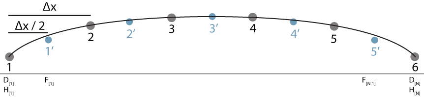

Create a model of lamellar flow for a 2-dimensional, width-averaged, flowline of an isothermal glacier or ice sheet. Calculations are discretized and automated, making this a simple model to begin the descent into numerical ice sheet modeling. Validation of the model implementation is performed through comparisons to analytical solutions for very simple geometries. Comparisons can also be made against modern ice sheets.
Math and Physics: Write a program for a discrete time-evolving 2-D numerical model of an ice sheet or glacier.
Glaciology: Gain an understanding of the rate of ice sheet growth and collapse. Discover what effects the bed has on the profile of an ice sheet.
Scientific Method: Generate a hypothesis, and perform an experiment with the model. Vary parameters.
None
A significant achievement in the scope of glaciology was Nye's (1952) application of Glen's (1952) isotropic relation between stress and strain of polycrystalline ice. The model is versatile, as it can explain glacier behavior in both map and cross sectional views. Because it sparked the modern age of glaciology, every glaciologist should probably construct and use it at least once. Therefore, the topic for the first introduction to glacier modeling is an obvious choice. An understanding of numerical methods and the ability to intelligently solve problems with a computer are important tools in the twenty-first century, regardless of the field of study. The simplicity of Nye's lamellar flow model leads to a algorithm that is easy to implement and perform for a discretized 2-D glacier.
This content expands upon the work in Cuffey and Patterson's (2010) The Physics of Glaciers and van der Veen's (2013) Fundamentals of Glacier Dynamics.
| Source | Content | Location |
|---|---|---|
| The Physics of Glaciers | Force Balance and Continuity | 8.5, 8.5.5.1 |
| Diffusive Waves | 11.3 | |
| Fundamentals of Glacier Dynamics | Modeling Glacier Flow | Chapter 4 |
| Lamellar Flow | 4.2 | |
| Continuity, Vialov Profile | 5.2, 5.3 | |
| Halfar and Bueler Similarity Solutions | 10.3 |
For strong mathematical derivations, Hutter's (1983) Theoretical glaciology and Greeve and Blatter's (2009) Dynamics of Ice Sheets and Glaciers are very comprehensive references.
| Symbol | Description |
|---|---|
| \( \# \) | vector or grid index |
| \( \#' \) | vector or grid index for 'off-grid' point |
| \( A \) | rate prefactor |
| \( A_0 \) | rheology-dependent constant |
| \( B \) | rate prefactor |
| \( d \) | depth from ice surface |
| \( D \) | diffusivity equation |
| \( g \) | acceleration due to gravity |
| \( H \) | ice thickness |
| \( H_0 \) | thickness at ice divide |
| \( \hat{H} \) | normalized ice thickness \( H/H_0 \) |
| \( \tilde{H}_0 \) | reference ice divide thickness |
| \( L \) | horizontal distance from ice divide to ice sheet edge |
| \( M \) | surface elevation change per time due to surface mass balance |
| \( n \) | flow law exponent |
| \( R \) | radius of an axisymmetric ice sheet |
| \( \tilde{R} \) | reference radius of an axisymmetric ice sheet |
| \( r \) | distance from center of an axisymmetric ice sheet |
| \( \hat{r} \) | normalized distance from center of an axisymmetric ice sheet \( r/R \) |
| \( t \) | time |
| \( T \) | time-scale for adjustment |
| \( \{u,w,v\} \) | velocities parallel to \( \{x,y,z\} \) |
| \( u_0 \) | surface velocity |
| \( u_b \) | sliding velocity at the bed |
| \( U \) | average velocity for a column of ice |
| \( \alpha \) | surface slope dip from horizontal |
| \( \Delta t \) | time step |
| \( \Delta x \) | grid spacing |
| \( \lambda \) | coefficient for surface mass balance dependent on time and thickness |
| \( \phi \) | flux of ice passing through vertical column |
| \( \rho \) | mass-density of ice |
| \( \tau_{bx} \) | basal drag |
| \( \tau_{dx} \) | driving stress |
This follows the basic derivation given by Nye (1952). There are two governing principles behind the model of lamellar flow in glaciers and ice sheets. The first is that the only source of drag is interactions at the glacier boundaries, such as that between the ice and the bed or the ice and the lateral walls. This means for a two-dimensional cross-section, the ice is in contact with the bed but the upper surface of the ice is free of drag. The same model can describe the observed transverse velocity gradients that characterize glacier flow in map-view if both sides are bound to the side walls. The model described here is that of a 2-D cross-sectional flowline with no basal sliding (\( u_b\)), meaning basal drag (\(\tau_{bx}\)) is equal in magnitude to the driving stress (\(\tau_{dx}\)). \[ \mbox{ \( \tau_{dx} = \tau_{xz} = \tau_{bx} \) when \( u_b = 0\) } \]
The second principle is is the principle of continuity, which states that there is no change in volume through time (accumulation and ablation neglected) and the density (\( \rho \)) does not change. In reality, continuity is based on the the conservation of mass, but because the model presented here concerns a perfectly homogeneous glacier, volume can serve as an appropriate proxy for mass. For any infinitessimal-width vertical column of ice, if the upper surface has a slope that is not directly perpendicular to gravity, there is a flux imbalance between the ice entering one side, and exiting the other, which is described by \( \phi = H U \), with \( H \) the height (thickness) of the column, and \( U \) the vertically-averaged velocity for the column. Because of this imbalance, the rate-change of the ice column thickness with time is non-zero, and is the sum of the flux imbalance and the surface mass balance (\(M\)). \[ {\partial H \over \partial t} = -{d \over dx} \phi + M \] In this derivation, the representation of \( U \) is sought to provide closure to the above continuity equation.
Consider a simple flowline model of a glacier with coordinates \( x \) oriented downflow and parallel to the surface and \( z \) oriented perpendicular to \( x \) with positive-\( z \) upwards. The shear stress at any depth \( z = d \) in a glacier is given by \( \tau_{xz} = \rho g d \sin{\alpha} \). Using the isotropic Nye-Glen creep relation \[ \dot{\varepsilon} = \left({\tau \over B}\right)^n \] it is possible to calculate the velocity at any depth (\( d \)) as \[ u_d = {C \over n+1} (\sin{\alpha})^n d^{n+1} + u_0 \] with \( C=\left({-\rho g / B}\right)^n \). Because \( u_b = 0 \), the velocity difference between the surface and bed is simple to calculate. \[ u_0 = {C \over n+1} (\sin{\alpha})^n H^{n+1} \] Integrating the velocity at depth over the full thickness of the ice column gives the flux (\( \phi \)) of ice through the column. \[ \phi = u_b H + {C\over n+2}(\sin{\alpha})^n H^{n+2} \] The average velocity of ice in the column is \[ U = {2 A H \over n+2}{\tau_{dx}}^n. \] This enables the solution to the continuity equation in terms of \( H \), \( \alpha \), and \( \partial H / \partial t \).
Combining the continuity equations with those for the driving stress and the average velocity of an ice column, it is possible to represent thickness change as a diffusion equation of the form \[ {\partial H \over \partial t} = {\partial \over \partial x} \left( D {\partial h \over \partial x} \right) + M, \] which has a known solution and is therefore useful for the purposes here. This diffusive form also ensures more stable results during the running of the numerical model that is presented below.
While a solution is now possible given the continuous solution above the numerical model presented here is discrete, consisting of only a set of points rather than a continuous surface. Continuous models and equations can be computationally consuming, so models are commonly discretized spatially into a set of points and temporally into time-steps. When the members of the spatial set and the temporal set become infinite in number, the continuous solution is at hand, but even a limited number of points can be employed to good effect. In this section the numerical model implementation of the above solution is given, and certain numerical methods are demonstrated to perform better than others. Here a staggered grid is used, a diagram of which is shown below.
For the diagram of a staggered grid, the thin line shows a continuous ice sheet surface. The dark circles show the discretization of the continuous surface into a set of grid points, here labeled 1 through 6. The smaller blue circles show the location of the off-grid points, which are located at the midpoints of a line connecting adjacent grid points. Notice that at the grid points, ice thickness is known and updated during the model run. The off-grid points are one less in number than the grid points, and have their own set of indices.
A staggered grid is such that there are 'grid points' that contain 'true data' on ice thickness and surface elevation and there are 'off-grid points' that contain interpolated data on ice thickness and surface elevation. The off-grid points can occur anywhere between grid points, though it is most simple to consider evenly spaced grid points at steps \( \Delta x \) with off-grid points located at the midpoint between grid points. The grid points are the data set that is updated every time step. Grid points can be thought of as a 1-dimensional column of ice and odff-grid points are used in consideration of surface slope and can be treated as flux gates, where ice enters and exits the 1-D column of ice represented by the grid points. By considering the flux through off-grid points on either side of a grid point, the flux imbalance can be determined, and the rate of thickness change can be calculated just as in the continuous solution.
The model specifications are as follows: This model is composed of \( N \) points evenly distributed in a one-dimensional space oriented parallel to the x-axis. Each point has an associated value for bed elevation (\( b \)) and surface elevation (\( h \)) (or thickness, (\( H \)). The model is time-evolving, with a finite time step \( \Delta t \) over which the model progresses under only the forcings of a uniform surface mass balance rate \( M \) and internal deformation related to weight and gravity.
Depending on the programming language, there may be list-like or vector-like objects that would be well-suited for the one-dimensional coordinate system used in the numerical model. The algorithm presented below assumes that vectors are used to store and access the data in an organized way.
Having established the shell of the program, it is necessary to parameterize the model with numerical values for different rate factors, exponents, and dimensions.
Assuming the flow exponent \( n = 3 \), here is a quick reference to some potential values for the prefactor \( A \) in units of kPa-3 yr-1 given by Hooke (1981).
| Temperature (C) | Prefactor |
|---|---|
| 0 | 1.15×10-6 |
| -5 | 4.6×10-8 |
| -10 | 2.26×10-8 |
| -25 | 2.5×10-9 |
| -50 | 3.47×10-11 |
The maximum width of the modern Antarctic ice sheet is around 4600 km, reaching from coast to coast. The maximum width of the modern Greenland ice sheet in the East-West direction is around 1200 km and in the North-South direction is around 2400 km. The maximum width of the Laurentide ice sheet was probably around 5000 km.
Though there is clearly spatial heterogeneity in accumulation and ablation rates across both modern ice sheets, some first-order values for average surface mass balance can be given. Modeled Antarctic surface mass balance for the grounded portion of the Antarctic ice sheet is an average of around 18 cm ice-equivalent per year (Lenaerts et al, 2012). Modeled Greenlandic surface mass balance for the Greenland ice sheet is an average of around 30 cm ice-equivalent per year (Ettema et al, 2009).
There are certain parameterizations of the model that have unique analytical solutions. By parameterizing the model to the conditions, the correct implementation of the numerical model can be verified. These analytical solutions, their parameterizations, and ways to modify the general algorithm in compliance are presented here.
The Vialov profile is an analytical solution for the surface profile of an ice sheet with a perfectly horizontal bed subject to a spatially and temporally uniform surface mass balance, and pinned laterally at positions \( x = \pm L \) where the thickness is zero. Under these conditions, there is a steady-state profile defined by Vialov (1958). The continuous function relating ice sheet thickness \( H \), which is equivalent to surface elevation \( h \) for a horizontal bed at elevation 0, at a scalar distance \( x \) from the ice divide to the half-width \( L \) of the ice sheet and the uniform surface mass balance \( M \) is \[ H(x) = \left({2 (n+2)^{1/n} \over \rho g} \left({M \over 2 A}\right)^{1/n} \left(L^{1+1/n} - x^{1+1/n}\right)\right)^{-\left(2+2/n\right)} \]
To compare the numerical solution to the analytical solution, the numerical model must be parameterized with a horizontal bed, and be grown from nothing, meaning that at the initialization of the model, the ice thickness is zero. Therefore, in step 0 of the algorithm, set \( H_\# = 0 \), and \( G_\# = 0 \). Because the Vialov profile requires the edges of the model be pinned at zero, after step 4 of the algorithm, ensure that the \( H_1 = H_N = 0 \). Using these simple modifications, and running the model for long periods to approach the steady state, it is possible to compare near-steady state condition in the numerical model to the analytical solution. With regards to plotting the solutions, it is probably best to center the model domain at \( x=0 \), so that the two solutions are horizontally registered.
While the Vialov profile concerns an ice sheet in steady-state, an understanding of the collapse or relaxation of an ice sheet can also be analytically derived. Given an ice sheet like that described by the Vialov profile, with a horizontal bed, if the surface mass balance is turned to zero and the model domain is increased to allow for lateral expansion, then the ice sheet will be in disequilibrium, and the ice sheet will both decrease thickness at the ice divide and widen. Analytical solutions for the condition of ice sheet collapse under nil surface mass balance are given by Halfar (1983) and Nye (2000) for axisymmetric ice sheets. The basic principle of these analytical solutions is that there is a persistent similarity between ice sheet elevation profiles for any time, and that due to the zero mass balance, the ice sheet has a constant volume. In a way, the solutions hinge on using normalized ice sheet thickness \( \hat{H} = H/H_0 \) and radius \(\hat{r} = r/R \) to describe the profile, with the time-dependency describing the mapping between normalized parameter and the steady-state solution.
For an ice sheet with initial ice divide thickness \( \tilde{H}_0 \) and radius \( \tilde{R} \), the thickness at a time \( t \) after the nullification of surface mass balance is given by \[ H_0 (t) = \tilde{H}_0 \left(1+ {t \over T} \right)^{-2/(5n+3)} \] and the corresponding ice sheet radius is given by \[ R(t) = \tilde{R} \left(1+ {t \over T} \right)^{1/(5n+3)} \] with \[ T = {1 \over (5n+3)A_0}\left({2n+1 \over n+1}\right)^n { \tilde{R}^{n+1} \over \tilde{H}_0^{2n+1}} \] \[ A_0 = {2A\over n+2}(\rho g)^n \]
Bueler et al (2005) give an exact, continuous solution for an ice sheet elevation profile under very specific conditions of non-zero surface mass balance. \[ M = {\lambda \over T} H \] with \( \lambda \) a real constant and the starting conditions is not \( t = 0 \), but rather \( t = T \). There are three basic cases for how the choice of \( \lambda \) affects the ice sheet growth or collapse. If \( \lambda = 0 \), then \( M = 0 \), and surface mass balance is nil, which is the condition described in the previous section on the Halfar (1983) solution. If \( \lambda > 0 \), then surface mass balance is positive, and there is accumulation that increases with thickness. If \( \lambda < 0 \), then surface mass balance is negative, and there is ablation that increases with thickness. The reality of the relation between surface mass balance and ice thickness can be questioned, but regardless, the equation for the elevation profiles of ice sheet is \[ H(r,t) = \tilde{H}_0 \left({t \over T}\right)^{-a}\left[1-\left(\left({t\over T}\right)^{-b}{r\over\tilde{R}}\right)^{n/(2n+1)}\right]^{n/(2n+1)} \] with \[ a = {2-(n+1)\lambda \over 5n + 3} \] \[ b = {1+(2n+1) \lambda \over 5n+3} \] The corresponding solution for the thickness at the ice divide can be obtained by setting \( r \rightarrow 0 \) \[ H_0(t) = \tilde{H}_0 \left( {t \over T} \right)^{-a} \] The solution for the ice sheet radius is given by \[ R(t) = \tilde{r} \left( {t\over T} \right)^{b} \]
Having tested the model on simple geometries, and simple conditions of surface mass balance, exploration into more dynamic and complex conditions is warranted. There are a number of hypotheses to test with this model, which could concern the effect of bed topography or non-uniform surface mass balance on the surface elevation profile. Because the model is time-evolving, the effects of perturbation at one location can be tracked towards remote reaches of the glacier. It is advised that original hypotheses be created and tested through the use of the model.